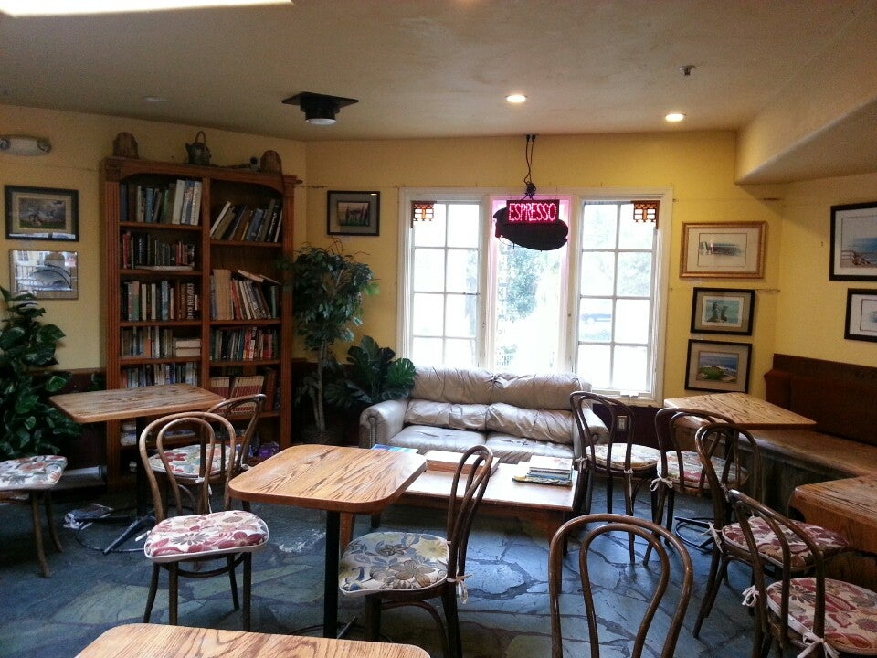
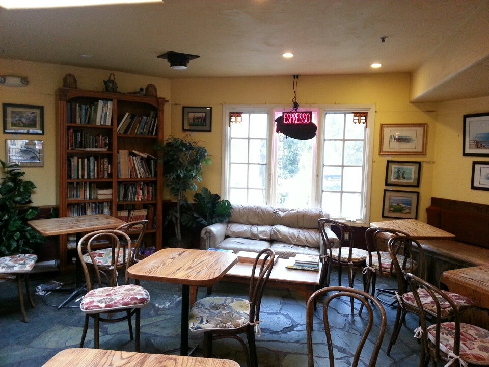

Welcome! I’m a Ph.D. candidate in Economics at the University of California, Santa Cruz. I broadly work in the economics of education. Specifically, my research focuses on gender and caste-based inequalities in education, and their relationship with measures of teacher effectiveness and teacher–student interactions.
I am on the 2025–26 job market and available for interviews.
Email: gsachdev@ucsc.edu
You can find my CV here.
Research
In my job market paper, I investigate if and how teachers affect gaps in academic performance between boys and girls, through their impacts on both cognitive and non-cognitive skills. I argue that effective teachers have the strongest impacts on students in the dimension in which the students have a comparative disadvantage.
More broadly, my research examines inequities in education and the factors that shape them. I have several projects investigating how teachers influence student outcomes and affect disparities between groups, and how institutional factors such as affirmative action policies influence teacher quality. You can read more about these projects here.
Teaching and Mentorship
Over the course of my Ph.D., I have been actively involved in teaching and mentorship. My teaching philosophy focuses on creating a supportive, inclusive learning environment where students are encouraged to engage critically and analytically with topics typically taught in economics courses, but with an emphasis on economics as a quantitative social science. You can read more about my teaching and mentorship here.
Personal Interests
Outside of academia, I love playing blues guitar, climbing, and exploring new coffee shops.
 

Links: